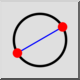
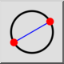

Menù: Disegna > Cerchio > 2 Punti
Scorciatoia: C, 2
Comandi: circle2p | c2
Barra degli strumenti / Icona:
 

Menù: Disegna > Cerchio > 2 Punti
Scorciatoia: C, 2
Comandi: circle2p | c2
Descrizione:
Costruisce una circonferenza noti i punti agli estremi di un diametro.
Procedura: